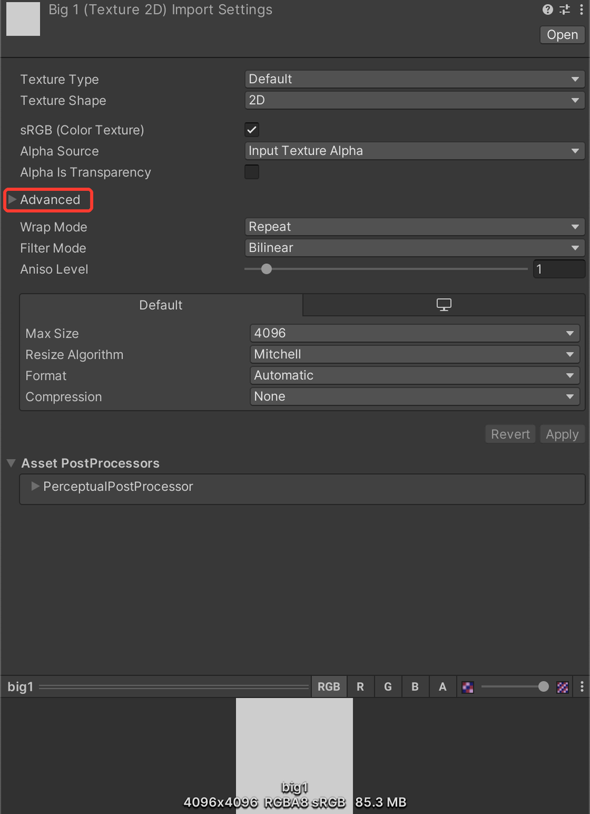

"mipmapped textures without 'Streaming Mip Maps' enabled" - VRChat fix
Quick fix
- Select the textures in the Project window (you can select several at once)
- Open Advanced in the Inspector and check "Streaming Mipmaps"

Want it checked automatically? Avatar Setup Doctor finds this in one click - free version. Try it free
What you see on screen:
This avatar has mipmapped textures without 'Streaming Mip Maps' enabled.
What it means
Textures that generate mipmaps (smaller versions used at a distance) have "Streaming Mipmaps" turned off.
Common causes
- Textures from a newly added outfit or accessory
- Textures you painted or exported yourself
How to fix it
- Select the textures in the Project window (you can select several at once)
- Open Advanced in the Inspector and check "Streaming Mipmaps"
- Press Apply and upload again
Before you change anything, make a full copy of your project folder so you can go back.
Fix this automaticallyAvatar Setup Doctor adds a window to Unity. Press Diagnose and it lists what's wrong with your avatar project, why, and how to fix it - the paid version fixes many issues in one click. Free version available.
For this problem, it lists textures with it turned off, and the paid version turns it on in one click.
Get Avatar Setup Doctor (Free version available)
For this problem, it lists textures with it turned off, and the paid version turns it on in one click.
Get Avatar Setup Doctor (Free version available)